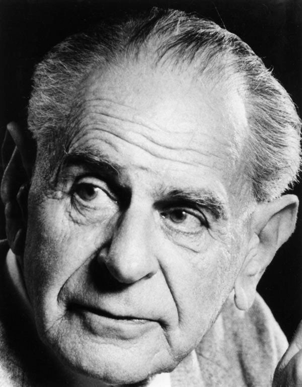

Tema 19 · Razón y sociedad en el siglo XX: de Fráncfort a Rawls
Para entrar en la razón y la sociedad del siglo XX
El tema anterior se cerró con una pregunta que el siglo XX no pudo esquivar. Tras dos guerras mundiales y la catástrofe de los totalitarismos, ¿qué podemos esperar todavía de la razón? Durante siglos, la filosofía moderna había confiado en ella como en una promesa: la razón nos sacaría de la superstición, dominaría la naturaleza y ordenaría con justicia la convivencia (§47, §51). Pero la misma centuria que llevó esa confianza a su cumbre técnica fue la de Auschwitz y el Gulag. Algo había que repensar. Y lo característico de los pensadores que veremos es que ya no examinan la razón en abstracto, como hizo Kant (§50), sino en sociedad: en cómo trabaja —o fracasa— dentro de la ciencia, la cultura y la política.
A ese frente se asoman cuatro respuestas, y conviene tener desde el principio el mapa. Primero, la Escuela de Fráncfort, que lanza la sospecha más sombría: la razón que prometía liberarnos se ha convertido en un instrumento de dominio, y la Ilustración ha revertido en una nueva barbarie (§68). Después, Hannah Arendt, que se enfrenta cara a cara con el agujero negro del siglo —el totalitarismo— y descubre en él una forma de mal completamente nueva (§69). En tercer lugar, la doble disputa que enfrenta a Karl Popper con la propia Escuela y con Jürgen Habermas: cómo debe trabajar la razón en la ciencia y hasta dónde debe intervenir el Estado para mejorar la sociedad (§70). Y, por último, John Rawls, que en plena posguerra se atreve a reconstruir: a preguntar, con herramientas nuevas, cómo sería una sociedad justa (§71).
Son cuatro voces que discuten entre sí —el pesimismo de Fráncfort frente a la confianza de Rawls, el método de Popper frente al de Habermas—, pero todas comparten el mismo punto de partida: después de lo ocurrido, ninguna de ellas puede ya dar la razón por inocente.
§68 · La Escuela de Fráncfort: la dialéctica de la Ilustración
Una teoría crítica de la sociedad. En 1923 se funda en Alemania el Instituto de Investigación Social, pronto conocido como la Escuela de Fráncfort. Bajo la dirección de Max Horkheimer (1895-1973) reúne a un grupo brillante —Theodor W. Adorno (1903-1969), Herbert Marcuse, Walter Benjamin, Erich Fromm— que comparten una herencia y un propósito. La herencia es la de Marx (§58), pero releído a la luz del siglo XX y combinado con el psicoanálisis de Freud (§56): si Marx explicó la opresión por la economía, hará falta también explicar por qué los oprimidos consienten, y ahí entra el estudio de la psique y de la cultura. El propósito lo nombra Horkheimer con una distinción que da nombre a la corriente. La teoría tradicional —la de las ciencias al uso— describe el mundo tal como es y, al aceptarlo, acaba legitimándolo; la teoría crítica, en cambio, no se conforma con describir: quiere desenmascarar las formas de dominación y contribuir a una sociedad más libre. Conocer, para ellos, no es retratar lo que hay, sino servir a la emancipación.
La dialéctica de la Ilustración. Su obra más influyente nace en el peor momento: Dialéctica de la Ilustración (1944), escrita por Horkheimer y Adorno en el exilio estadounidense, mientras Europa ardía. Su tesis es una paradoja amarga. La Ilustración (§47) había prometido liberar al ser humano del miedo y del mito mediante la razón; pues bien, dicen los autores, ese proyecto se ha vuelto contra sí mismo y ha desembocado en una nueva barbarie. ¿Cómo es posible? Porque la razón se fue estrechando hasta quedar reducida a razón instrumental: una razón que solo sabe calcular los medios más eficaces para un fin, pero que se declara incompetente para discutir los fines mismos. Una razón así sirve para dominar la naturaleza —«saber es poder», había dicho Bacon—, y de la naturaleza pasa a dominar también al ser humano, tratado como una cosa más que administrar. El horror del siglo es su prueba más siniestra: el exterminio nazi fue, entre otras cosas, un triunfo de la racionalidad instrumental —la organización técnica, burocrática y eficiente de la muerte— absolutamente divorciada de toda pregunta racional por el bien. La Ilustración revierte en mito: la misma luz que prometía emancipar se convierte en un nuevo dominio. Es el reverso oscuro del optimismo ilustrado que ya quedó anunciado como su límite histórico (§47).
La industria cultural. Hay un segundo hallazgo, más cercano a nuestra vida diaria. En el «mundo administrado» del capitalismo avanzado, advierten Adorno y Horkheimer, hasta la cultura se ha vuelto una industria. El cine, la radio, la música ligera o las revistas se fabrican en serie como cualquier otra mercancía, según fórmulas que se repiten y que el público consume sin esfuerzo. Esa industria cultural entretiene y, al entretener, pacifica: ofrece una evasión cómoda que adormece el pensamiento crítico y enseña a desear justo lo que el sistema puede vender. No hace falta censura ni policía; basta con mantener a la gente distraída y satisfecha. La cultura de masas se convierte así en un instrumento sutil de control social, tanto más eficaz cuanto que se disfraza de mero ocio.
Una revisión de Marx. Los de Fráncfort son marxistas, pero heterodoxos: el siglo les ha desmentido a Marx demasiadas cosas —la revolución proletaria no llegó a los países industriales, la clase obrera se integró en el sistema en lugar de derribarlo, y donde triunfó el marxismo lo hizo como nuevo totalitarismo—. Conservan, pues, su impulso crítico, pero someten su doctrina a revisión. La crítica frankfurtiana al marxismo puede resumirse en seis puntos:
- Antropológico. El ser humano no es un simple homo faber —un animal que solo trabaja—, ni el mundo una mera fábrica. Reducirlo todo al trabajo empobrece lo humano y deja fuera dimensiones decisivas de la existencia.
- La técnica como ideología. Las propias fuerzas productivas —la tecnología— se han convertido en superestructura, es decir, en ideología: la fe ciega en el progreso técnico funciona hoy como una justificación más del orden establecido.
- La interacción no se reduce al trabajo. Las relaciones entre los seres humanos no pueden deducirse solo de las relaciones de producción que el individuo entabla con la naturaleza —una intuición que Habermas desarrollará hasta el final (§70)—.
- La lucha de clases es un esquema demasiado simple. Tomada como única clave para interpretar la historia, resulta insuficiente ante la complejidad socioeconómica del presente.
- Han surgido nuevas clases. En una sociedad estratificada de forma mucho más fina, el esquema binario de burguesía y proletariado ya no recoge la realidad social.
- La religión es más compleja de lo que Marx admitió. No vio su funcionalidad múltiple ni los casos en que la religión se enfrenta a la ideología dominante —como la teología de la liberación—; en consecuencia, su ateísmo quedaría sin fundamento sólido.
Los de Fráncfort diagnosticaron, en suma, una razón que se ha vuelto dominio, y señalaron el horror totalitario como su prueba más extrema. Esa primera generación terminó, además, en un callejón pesimista: si la razón instrumental lo ha colonizado todo, apenas parece quedar resquicio para la emancipación. La pensadora a la que pasamos ahora miró ese horror de frente. No le interesó la teoría de cómo la razón degenera, sino el análisis de la cosa misma —el sistema totalitario— y del tipo de mal, enteramente nuevo, que trajo al mundo.
§69 · Hannah Arendt: el análisis del totalitarismo
Pensar la catástrofe desde dentro. Hannah Arendt (1906-1975) fue una mujer judía que se dedicó al oficio de pensar en la Alemania que la quería muerta. Discípula de Heidegger y de Karl Jaspers (§63), vio cómo su maestro se afiliaba al nazismo mientras a ella la interrogaba la Gestapo; huyó del país, pasó por un campo de internamiento francés y acabó refugiada en Estados Unidos. No es un dato menor para lo que sigue: Arendt no analizó el totalitarismo como un objeto lejano, sino como quien ha escapado de sus fauces. Toda su obra política nace de una pregunta sin respuesta cómoda: ¿cómo pudo el país más culto de Europa engendrar Auschwitz?
El totalitarismo, una forma nueva de dominación. Su primera gran obra, Los orígenes del totalitarismo (1951), sostiene una tesis fuerte: el nazismo y el estalinismo no son una tiranía más, ni una dictadura especialmente cruel, sino algo nuevo en la historia. La tiranía clásica quería obediencia y poder; el totalitarismo quiere algo mucho mayor —la dominación total, rehacer al ser humano mismo conforme a un plan—. Por eso, dice Arendt, supuso una quiebra en la continuidad de la historia de Occidente: ante él, las categorías políticas y morales que habíamos heredado pierden su sentido y dejan de servirnos para comprender lo que tenemos delante. Estamos ante un fenómeno sin precedente, y conviene resistirse a domesticarlo con los viejos nombres.
Terror, ideología, atomización. Arendt desmonta el mecanismo en tres piezas. La primera es el terror. En un régimen normal, incluso en una tiranía, el terror es un medio para conservar el poder; en el totalitario es la esencia misma del régimen y un fin en sí mismo. Se ejerce sobre poblaciones ya sometidas, que no se resisten, porque su función no es defender el poder, sino actuar como un «catalizador» que acelere las supuestas leyes que el régimen dice servir: las leyes de la Naturaleza en el nazismo —la raza superior destinada a imponerse— y las leyes de la Historia en el estalinismo —el avance inevitable hacia el comunismo, inspirado en una deformación del marxismo que el propio Marx no habría reconocido1—. Como se creen meros agentes de la Naturaleza o de la Historia, los verdugos no se sienten responsables de los crímenes que cometen en su nombre.
La segunda pieza es la ideología. El régimen sustituye la realidad por una ficción coherente y total: no te fíes de lo que ves, de tu experiencia ni de los hechos, sino de lo que el Partido te dice que debes ver. La ideología ofrece una explicación de todo —pasado, presente y futuro— que se basta a sí misma y que ningún hecho puede desmentir, porque cualquier objeción se reinterpreta como parte del complot. Su efecto más profundo es disolver la frontera misma entre lo verdadero y lo falso:
El sujeto ideal del régimen totalitario no es el nazi convencido ni el comunista entregado, sino las personas para quienes ya no existe la distinción entre hecho y ficción, entre lo verdadero y lo falso.
—Hannah Arendt, Los orígenes del totalitarismo (1951)
La tercera pieza es la atomización. Para dominar del todo, el régimen necesita individuos solos. Por eso rompe los vínculos que unen a las personas a sus grupos —la clase, el oficio, las asociaciones, hasta la familia— y las convierte en una masa de individuos aislados, desarraigados e intercambiables. El ser humano solo, sin nadie con quien contrastar lo que piensa, es infinitamente más fácil de manipular; y una sociedad de personas atomizadas, que se vigilan y se denuncian entre sí, ha perdido ese espacio compartido de palabra y acción común en el que, para Arendt, vive de verdad la libertad. El totalitarismo no oprime una pluralidad que existe: la destruye de raíz.
Eichmann y la banalidad del mal. En 1961 Arendt viajó a Jerusalén, enviada por una revista, a cubrir el juicio de Adolf Eichmann, el funcionario de las SS que había organizado la logística del transporte de millones de judíos a los campos de exterminio —un colaborador necesario del asesinato en masa que mataba, por así decir, desde su escritorio—. Esperaba encontrarse con un monstruo, un fanático sádico a la altura de sus crímenes. Lo que vio la desconcertó: un hombre gris, mediocre, un burócrata aplicado que hablaba con frases hechas y se defendía repitiendo que «solo cumplía órdenes» y que «nunca había matado a nadie». De ahí su conclusión más célebre y más malentendida, la banalidad del mal2: «los hechos fueron monstruosos —escribió—, pero el hombre no fue un monstruo». El mal más extremo del siglo no había brotado de una maldad demoníaca ni de una perversión excepcional, sino de algo mucho más corriente y, por eso, más inquietante.
¿De qué, entonces? De la incapacidad de pensar. Eichmann, sostiene Arendt, había perdido la capacidad de mantener consigo mismo ese diálogo interior, ese «dos en uno» de la conciencia, en el que sopesamos lo que hacemos y nos preguntamos si está bien; y, con ella, había perdido la capacidad de ponerse en el lugar del otro, de imaginar el sufrimiento que organizaba. No es que fuera tonto: es que había dejado de pensar, sustituyendo el juicio propio por los clichés del régimen y por el afán de cumplir y encajar. Aquí enlaza Arendt, sin nombrarla, con la autonomía ilustrada, el «atrévete a pensar» de Kant (§47): cuando el individuo renuncia a juzgar por sí mismo y delega esa tarea en la ideología, cualquier atrocidad se vuelve posible. La consecuencia es escalofriante: para colaborar en un mal inmenso no hacen falta instintos asesinos ni convicciones extremas; basta con dejar de pensar, y las circunstancias de un régimen totalitario pueden llevar a ello a cualquiera.
Arendt mostró, en suma, que el totalitarismo triunfa destruyendo la pluralidad, el espacio público del diálogo y la propia capacidad de juzgar. No sorprende, entonces, que los dos pensadores a los que pasamos ahora —enfrentados en casi todo lo demás— coincidieran en hacer de la discusión racional abierta, en la ciencia y en la política, su bandera común frente a toda pretensión de verdad cerrada e indiscutible.
§70 · Popper y Habermas: la disputa del positivismo y el intervencionismo del estado
Dos disputas bajo una misma etiqueta. El rótulo que da título a esta sección reúne, en realidad, dos cosas distintas, y conviene separarlas antes de empezar. Por un lado, hay una disputa metodológica: cómo debe conocer la ciencia que estudia la sociedad —la llamada «disputa del positivismo», que enfrentó a Popper con la Escuela de Fráncfort—. Por otro, hay una cuestión política: hasta dónde debe el Estado rehacer la sociedad, donde Popper defiende la reforma gradual frente a la planificación total. Son dos planos que se tocan, pero no se confunden. Los recorremos por orden, empezando por la figura que está en los dos: Popper.
Popper: la falsabilidad y la sociedad abierta. Karl Popper (1902-1994), vienés exiliado del nazismo, es uno de los grandes filósofos de la ciencia del siglo XX. Su idea más conocida responde a una pregunta: ¿qué distingue una teoría científica de una que no lo es? No el que se acumulen pruebas a su favor —eso es fácil—, sino justo lo contrario: la falsabilidad. Una teoría es científica solo si puede ser refutada por la experiencia, si establece de antemano qué hecho la dejaría por falsa. La ciencia no avanza verificando, sino por conjeturas y refutaciones: proponemos hipótesis audaces y nos esforzamos en derribarlas; las que resisten, provisionalmente, quedan en pie. Con este criterio en la mano, Popper negó el carácter científico del psicoanálisis de Freud —y también del marxismo—, porque son teorías que se acomodan a cualquier hecho y a las que nada podría refutar (§56). Lo que parecía su mayor fuerza —explicarlo todo— es para Popper su debilidad.

De la ciencia pasó Popper a la política con la misma lógica antidogmática. En La sociedad abierta y sus enemigos (1945) opone dos modelos. La sociedad cerrada es tribal y autoritaria: se cree en posesión de una verdad última sobre el sentido de la historia y no admite crítica. La sociedad abierta es democrática y plural: somete sus decisiones a discusión y revisión, igual que la ciencia somete sus hipótesis a refutación. Sus «enemigos» son, para Popper, los grandes pensadores que pretendieron conocer el rumbo necesario de la historia y rehacer la sociedad entera conforme a ese plan —Platón, Hegel y Marx (§58)—.
El intervencionismo del estado: dos maneras de reformar. Aquí aterriza el segundo plano del rótulo. Popper distingue dos formas de intervenir en la sociedad. La ingeniería social utópica u holista pretende rediseñar la sociedad de arriba abajo, de una vez y según un plan total —el sueño del marxismo—. La ingeniería social gradual (la célebre piecemeal, «a pequeños pasos») aborda los males concretos uno a uno —el paro, la pobreza, la enfermedad—, con reformas parciales que pueden contrastarse y, si fallan, rectificarse. Popper defiende la segunda por una razón epistemológica: como todo conocimiento es limitado y falible, las reformas totales son peligrosas —no se pueden corregir sin un coste enorme y abren la puerta a la tiranía de quien dice saber adónde va la historia—, mientras que las graduales se dejan evaluar y enmendar. No es, por tanto, ni el «dejar hacer» absoluto del liberalismo más rígido ni la planificación total: es un Estado que interviene para corregir problemas concretos sin arrogarse el rediseño de la vida entera. Esta defensa de la reforma gradual será el sustrato del Estado de bienestar que veremos en Rawls (§71).
La disputa del positivismo y la entrada de Habermas. En 1961, en un congreso de sociología alemana, estos planteamientos chocaron con los de la Escuela de Fráncfort en lo que se llamó la disputa del positivismo (Positivismusstreit). El núcleo era metodológico: ¿cómo debe proceder la ciencia social? Popper defendía un método único, cercano al de las ciencias naturales, que busca explicaciones contrastables y mantiene la neutralidad valorativa —separar los hechos de los juicios de valor—. Adorno y, sobre todo, Jürgen Habermas (1929) —ya de la segunda generación de la Escuela, empeñada en rescatar el proyecto ilustrado que sus maestros habían dado por perdido (§68)— respondieron que la sociedad no es un objeto neutro como la naturaleza: estudiarla es ya tomar partido, y una ciencia social que renuncia a criticar el todo acaba legitimándolo —es la «teoría tradicional» que vimos en §68—. Habermas lo afinó con una tesis propia: el conocimiento nunca es neutral, porque responde siempre a intereses. Hay un saber movido por el interés técnico —el dominio de la naturaleza, propio de las ciencias naturales y de la razón instrumental que Fráncfort había denunciado (§68)— y un saber movido por intereses práctico y emancipatorio —la comprensión entre las personas y su liberación—. La ciencia que se proclama puramente neutral no es que carezca de interés: oculta el suyo, el técnico. Frente a esa razón instrumental, Habermas opondrá una razón comunicativa, la que se ejerce en el diálogo orientado al entendimiento; pero su desarrollo pleno pertenece ya a otra discusión —la de la posmodernidad—, y allí lo retomaremos (§75).
Popper y Habermas discuten, en el fondo, cómo debe trabajar la razón —en la ciencia, en la reforma gradual de la sociedad— y coinciden en defender la discusión abierta frente a quien dice poseer la verdad última. Pero apostar por la reforma y por el diálogo deja en pie una pregunta de fondo: conforme a qué idea de justicia debe el Estado intervenir y repartir lo que hay. A responderla, reconstruyendo desde sus cimientos la vieja pregunta por la sociedad justa, dedicó su obra el último pensador de este tema.
§71 · John Rawls y el estado de bienestar
El contrato social, actualizado. John Rawls (1921-2002), filósofo estadounidense, publicó en 1971 Teoría de la justicia, el libro de filosofía política más influyente del siglo XX. Su pregunta es tan vieja como Aristóteles: la de la justicia distributiva, esto es, cuál es el reparto justo de los bienes en una sociedad. Y su herramienta para responderla es una vieja conocida, el contrato social, pero puesta al día. A diferencia de Hobbes, Locke y Rousseau (§43-§45), Rawls no imagina un estado de naturaleza prehistórico anterior a toda sociedad; parte de la situación presente y se pregunta cómo mejorarla. En lugar de aquel pacto fundacional, propone un experimento mental, una situación hipotética desde la que pensar qué principios deberían regir una sociedad justa.
La posición original y el velo de ignorancia. El experimento arranca de una pregunta que conviene hacerse despacio: ¿cómo querrías que fuera la sociedad si no supieras qué lugar vas a ocupar en ella? Rawls nos pide imaginarnos en lo que llama la posición original, eligiendo las reglas del juego social, pero cubiertos por un velo de ignorancia: desconocemos por completo quiénes seremos. Tras ese velo no sabes si serás hombre o mujer, listo o torpe, fuerte o débil, rico o pobre, con estudios o sin ellos, ni en qué época o cultura te tocará vivir. ¿Qué sociedad elegirías entonces? Como podrías acabar siendo cualquiera —también el más desfavorecido—, no te arriesgarás a diseñar un mundo con posiciones miserables, no vaya a ser que te toque a ti. El velo de ignorancia fuerza así la imparcialidad: al no poder hacer trampa a favor de uno mismo, cada cual razona como razonaría cualquier otro ser racional, y de ahí brota un acuerdo justo3.
Los tres principios de la justicia. ¿Qué se elegiría desde esa posición? Rawls sostiene que tres principios, ordenados por prioridad: no se pasa al segundo sin haber garantizado el primero, ni al tercero sin los dos anteriores. El primero es el principio de libertad: toda persona tiene el mismo derecho al más amplio sistema de libertades básicas compatible con esa misma libertad para los demás; mi libertad solo encuentra su límite en la de los otros. El segundo es la justa igualdad de oportunidades: no basta con prohibir la discriminación —una igualdad meramente formal—, sino que la sociedad debe poner medidas positivas, sobre todo educativas, para que las oportunidades sean reales y efectivas para todos. El tercero es el célebre principio de la diferencia: las desigualdades sociales y económicas solo se toleran si redundan en el mayor beneficio de los miembros más desfavorecidos de la sociedad. Es la estrategia que se conoce como maximin —maximizar el mínimo—: lo que importa no es cuán alta llega la cima, sino cuán alto está el suelo. Un ejemplo lo aclara: entre una sociedad A, donde el 90 % gana mucho pero el 10 % no llega a un salario digno, y una sociedad B, donde todos ganan menos que aquel 90 % pero nadie cae por debajo de lo digno, Rawls elige sin dudar la B, porque es la que mejor trata a quien peor está. A esta concepción la llama justicia como equidad: ¿quieres que haya ricos? De acuerdo, pero garantiza antes que no haya pobres de verdad.
Rawls y el estado de bienestar. Aquí está el alcance político de la propuesta, el que el currículo subraya. El principio de la diferencia da fundamento filosófico al Estado de bienestar: ese modelo de Estado que, mediante los impuestos, la sanidad y la educación públicas, las pensiones o el seguro de desempleo, redistribuye la riqueza para garantizar a todos un mínimo digno y unas oportunidades reales. Rawls ofrece, en el fondo, una vía media en la gran disputa del siglo: ni el liberalismo que sacraliza la libertad del mercado y se desentiende de la desigualdad, ni el colectivismo que sacrifica la libertad en nombre de la igualdad, sino una conciliación de ambas —libertad e igualdad— por la vía de la reforma, no de la revolución. Recoge así, actualizado, el viejo afán de corregir la desigualdad que ya latía en el liberalismo social (§46); y proporciona la clave de algo que dejamos anunciado al estudiar a Marx: el Estado de bienestar fue, precisamente, el mecanismo con que las democracias occidentales desmintieron su predicción de un proletariado cada vez más miserable abocado a la revolución (§58). La reforma gradual que defendía Popper (§70) encontró en Rawls su justificación moral.
Las críticas. La propuesta ha recibido objeciones de peso. Se ha dicho que nadie puede situarse de verdad tras el velo de ignorancia, que no sabemos pensar al margen de quienes somos; Rawls replica que eso prueba la dificultad de aplicar su método, no que el método sea falso. Se le ha reprochado también que presupone los valores liberales —una sociedad tolerante y de fuerte autonomía individual— y los disfraza de conclusión neutral. Los utilitaristas (§53) le objetan que su reparto no maximiza la felicidad del conjunto. Y la crítica más afilada niega que el maximin sea la única estrategia racional: una persona dispuesta a arriesgarse podría preferir la sociedad A, apostando a que le toque una buena posición; y si tras el velo hay jugadores así, ¿por qué habría de imponerse la opción prudente?
Con Rawls, la pregunta por la razón y la sociedad da un giro esperanzado. Después del diagnóstico sombrío de Fráncfort y del abismo que analizó Arendt, su obra encarna una confianza sobria y reconstructiva: la razón, escarmentada, todavía puede fundar una sociedad justa —no imponiendo un plan total, como temía Popper, sino acordando principios imparciales que cualquiera aceptaría—. El siglo interrogó a fondo a la razón y, pese a la catástrofe, no renunció a ella. Pero esa misma centuria abrió otro frente que aún no hemos tocado: en lugar de preguntar qué puede la razón, se volvió sobre el instrumento en que la razón se expresa —el lenguaje—. A esa otra gran vuelta de tuerca del pensamiento del siglo XX se dedica el tema siguiente (§72).
Marx murió en 1883, mucho antes de la Revolución rusa (1917) y del régimen de Stalin. Habló de una «dictadura del proletariado» como fase de transición, pero nada en su obra anticipa el Estado totalitario que se construyó en su nombre; conviene no confundir la teoría con lo que otros hicieron de ella (§58).↩︎
Banal significa, según la RAE, «trivial, común, insustancial». Muchos leyeron el término como una disculpa de Eichmann; es lo contrario. Arendt sostuvo siempre que sus crímenes eran de una gravedad sin medida y que merecía la horca a la que fue condenado.↩︎
No es casual que recuerde al imperativo categórico de Kant (§51): también allí lo justo era lo que podía quererse universalmente, despojado del interés particular. El velo de ignorancia es una manera ingeniosa de obligarnos a esa universalidad.↩︎